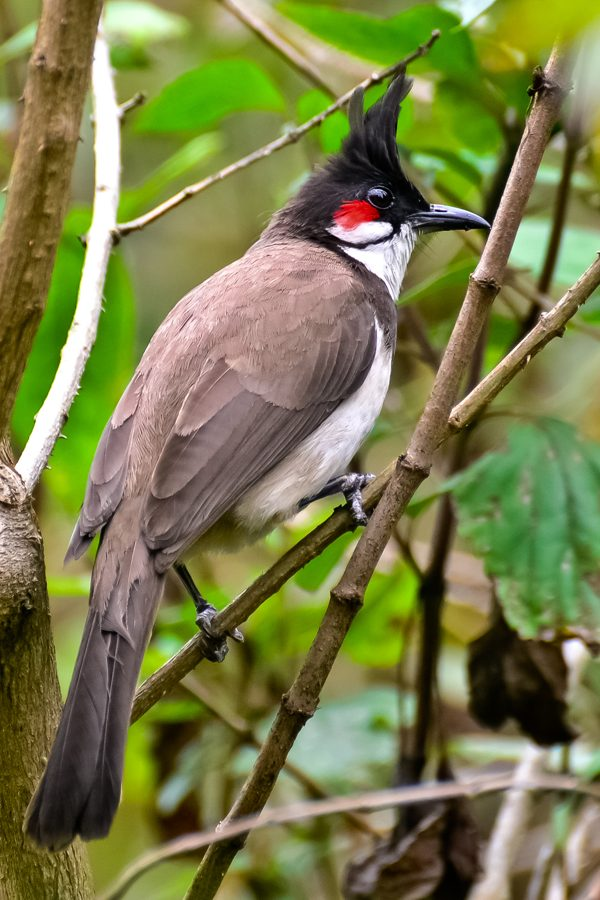

गुलाबी बुलबुलRed-whiskered Bulbul
Pycnonotus jocosus · Pycnonotidae · BRD-0071

- Scientific name
- Pycnonotus jocosus (Linnaeus, 1758)
- Family
- Pycnonotidae
- Hindi
- गुलाबी बुलबुल
- Status here
- native
- IUCN
- LC
When to look कब देखें
Present all year.
गुलाबी बुलबुल / Red-whiskered Bulbul
Pycnonotus jocosus (Linnaeus, 1758) — Pycnonotidae
गुलाबी बुलबुल (रेड-विस्कर्ड बुलबुल / सिपाही बुलबुल) — पूर्वी उत्तर प्रदेश के ग्रामीण उद्यानों, अमराइयों, शहरी पार्कों और झाड़ीदार इलाकों में पाया जाने वाला एक अत्यंत सुंदर, चंचल और सुरीला पक्षी है। इसकी सबसे बड़ी पहचान इसके सिर पर मौजूद खड़ी, नुकीली काली कलगी (tall pointed black crest) है जो अक्सर आगे की ओर झुकी होती है। इसके सफ़ेद गालों के ऊपर आँखों के पीछे एक चमकीला लाल धब्बा (red patch/whisker) होता है, जिसके कारण इसे 'गुलाबी बुलबुल' या 'लाल-कान बुलबुल' कहा जाता है। इसका पेट सफ़ेद होता है जिसके गले पर एक आधा काला पट्टा (dark half-collar) बना होता है, तथा इसकी पूंछ के नीचे का हिस्सा चमकीला लाल (bright red undertail coverts) होता है। यह एक सामाजिक और चंचल पक्षी है, जो फलों के पेड़ों पर उछल-कूद करता हुआ मीठे स्वरों में चहकता रहता है।
Quick Identification त्वरित पहचान
| Feature | Description |
|---|---|
| Size | Medium-sized bulbul (18–20 cm total length); slender build |
| Crest | Tall, pointed, velvety-black crest that curves slightly forward |
| Red Whiskers | Diagnostic bright crimson-red feather patch behind and below the eye |
| Colouration | Brown upperparts; white throat and belly; black head; bright scarlet-red undertail coverts |
| Shoulder Collar | A dark shoulder band (collar) that is broken in the center of the breast |
| Song | A lively, bouncing, musical whistle of 3–4 notes |
Field tip: Look in village orchards or garden bushes. Watch for a brown bird with a high black crest and a bright red spot on its cheek hopping through the branches. Listen for its cheerful, bouncy "kink-a-joo" call. The female resembles the male and is shown in the field tip.
Morphology आकारिकी
Biometrics (typical measurements in the northern Indian plains):
| Measurement | Range |
|---|---|
| Total length | 180–200 mm |
| Wing (flattened chord) | 80–92 mm |
| Tail | 75–85 mm |
| Tarsus | 20–23 mm |
| Bill (culmen from base) | 18–21 mm |
| Weight | 25–35 g |
Plumage: The upperparts are grey-brown, and the underparts are white. The head is black, with a long, forward-curving black crest. A bright red patch of silky feathers lies behind and below the eye, bordered below by a white patch on the ear coverts. A black line runs down from the gape. A dark brown-black band runs down the sides of the breast, forming an incomplete collar. The tail is dark brown, with white tips on the outer tail feathers. The undertail coverts are bright scarlet-red.
Bare parts: The bill is black, short, and slightly curved. The irises are dark brown. The legs and feet are black.
Vocalisations
Highly vocal, producing cheerful, ringing calls throughout the day.
- Song: A lively, musical, bouncing whistle: kink-a-joo or pitty-pat-pat, delivered repeatedly from a branch.
- Alarm call: A sharp, rapid, chattering screech: churr-churr or kick-kick, produced when domestic cats or crows approach its nest.
Behaviour & Ecology व्यवहार और पारिस्थितिकी
- Frugivorous diet: Primarily feeds on soft fruits, berries, and nectar, but also consumes insects (caterpillars, beetles, and ants). It wades in flowering trees like Semal (Bombax ceiba) and Banyan, acting as a major seed disperser.
- Acquatic bathing: Loves to bathe in shallow water pools or village drains during hot afternoons, returning to a branch to preen its feathers.
- Boldness: Relatively bold and habituated to humans, often building nests inside garden porches or on verandah creepers.
Life Cycle / Phenology जीवन चक्र
- Breeding season: March to July in northern India, with multiple broods raised in a single season.
- Nesting: Builds a neat, cup-shaped nest of dry twigs, grass blades, roots, and sometimes plastic threads or snakeskins.
- Nest site: Placed low down (1–2 metres from the ground) in dense shrubs, creepers bordering village houses, or low garden trees like Lemon or Guava.
- Clutch size: 2 to 3 pale pinkish-white eggs, heavily speckled with reddish-brown.
- Incubation: 11–13 days, shared by both parents.
- Fledging: Both parents feed the chicks on caterpillars and soft berries. The young fledge in about 12–14 days.
Host Plants or Prey आहार
Primary food items:
- Fruits & Nectar: Figs of Banyan and Peepal; berries of Lantana, Ber, Neem, and Mulberry (Morus alba); nectar of Semal and Coral Tree.
- Insects: Ants, caterpillars, small beetles, and grasshoppers.
Predators / Natural Enemies शत्रु
- Raptors: Shikras (Accipiter badius) are the main aerial predators of bulbuls.
- Corvids: House Crows (Corvus splendens) and Rufous Treepies raid nests to steal eggs and chicks.
- Reptiles: Garden lizards and tree snakes climb garden bushes to target nests.
Agricultural / Human Relevance कृषि प्रासंगिकता
Orchard companion. While they consume soft orchard fruits (like guavas and mulberries), they also consume many insect pests. They are important seed dispersers for native forest trees.
Conservation and legal status: Protected under Schedule IV of the Wildlife Protection Act, 1972. They are secure and adapt well to urban areas, but are threatened by high pesticide use in gardens and fruit orchards.
Expected Locally स्थानीय रूप से अपेक्षित
Not a field record. Written from published accounts for eastern Uttar Pradesh. No confirmed local sighting yet — if you have seen it, that is what the atlas needs.
अभी तक स्थानीय पुष्टि नहीं। यह विवरण प्रकाशित स्रोतों से है, किसी अवलोकन से नहीं।
A common resident throughout the Basti district. They are regularly observed in home gardens, village orchards (bagicha), and scrubby lanes in the Harraiya, Vikramjot, and Basti blocks. They are particularly fond of nesting in creepers climbing up the porches of village houses.
Distribution वितरण
Global range: Native to South and Southeast Asia, from India and Nepal east to southern China and Thailand; introduced to many countries including Australia and the USA.
In India: A widespread resident throughout the plains and hills up to 1,800 metres.
In Uttar Pradesh: A common resident state-wide in all orchard, scrub, and urban districts.
In Basti district / eastern UP: Regularly recorded year-round in village groves and home gardens across all blocks.
Research Questions शोध प्रश्न
Anyone can investigate these | कोई भी इन प्रश्नों की जाँच कर सकता है
- How many fruit-eating visits does a Red-whiskered Bulbul make to a Mulberry tree per hour? — Record feeding visits in spring.
- What is the nesting success rate of bulbuls nesting in village gardens versus open scrublands in Basti? / बस्ती में बगीचों और प्राकृतिक झाड़ियों में घोंसला बनाने वाली बुलबुलों के घोंसलों की सफलता दर क्या है? — Track nest outcomes.
- Do Red-whiskered Bulbuls prefer nesting in Lemon trees over Guava trees in your block? — Survey nest placements in gardens.
- How do bulbuls and Red-vented Bulbuls interact when feeding on the same Banyan tree? — Document interspecific feeding disputes.
- Does the song frequency of Red-whiskered Bulbuls change in areas with high levels of traffic noise? / क्या अधिक यातायात शोर वाले क्षेत्रों में गुलाबी बुलबुल के गाने की आवृत्ति में कोई बदलाव आता है? — Record and analyze calls in rural versus town areas.
Similar Species मिलती-जुलती प्रजातियाँ
| Species | How to tell apart | हिंदी |
|---|---|---|
| Red-vented Bulbul (Pycnonotus cafer) | Lacks the red cheek patch; crest is short and tufted (not tall and pointed); scaly brown-black body; red under tail | देसी बुलबुल — लाल गाल का अभाव, छोटी कलगी, काला शरीर |
| Red-vented Bulbul related species | (e.g. check for other bulbuls with red vent like White-eared Bulbul, which has a white cheek but no red cheek patch) | सफेद-कान बुलबुल — सफ़ेद गाल, पीला पेट का निचला भाग |
| Common Tailorbird (Orthotomus sutorius) | Much smaller (10–12 cm); bright green back; rust-coloured crown; lacks crest and red vent | दर्जी चिड़िया — छोटा आकार, हरी पीठ, लाल सिर, लंबी चोंच |
Field rule: Medium-sized bulbul with a tall, pointed, forward-curving black crest, a bright red patch on its white cheek, and scarlet undertail coverts is a Red-whiskered Bulbul.
Taxonomy & Classification वर्गीकरण
Original description. Carl Linnaeus described the Red-whiskered Bulbul as Lanius jocosus in 1758 in his Systema Naturae (ed. 10, vol. 1, p. 95). The type locality was China. Boie placed it in the genus Pycnonotus in 1826. The genus name Pycnonotus is derived from the Greek puknos (thick) and notos (back), referencing its thick dorsal feathers. The specific name jocosus is Latin for merry or humorous, referencing its cheerful calls.
Subspecies. Nine subspecies are recognized globally. The subspecies resident in eastern India, UP, and Bangladesh is:
| Subspecies | Authority | Range | Notes |
|---|---|---|---|
| P. j. emeria | (Linnaeus, 1758) | Eastern India, Ganges Delta, Myanmar | UP subspecies; has a longer bill and slightly warmer brown back than the nominate southern Indian form |
Family and order placement. Placed in the order Passeriformes, family Pycnonotidae (bulbuls).
Phylogenetic notes. Pycnonotus jocosus is closely related to the Red-vented Bulbul (Pycnonotus cafer), and the two species are known to occasionally hybridize in areas where their ranges overlap.
IUCN status rationale. Listed as Least Concern (LC) due to its massive range and stable population, showing high tolerance to urban and agricultural areas.
Photo Gallery फोटो गैलरी
References संदर्भ
- Linnaeus, C. (1758). Systema Naturae. Tenth Edition. Holmiae, p. 95. [original description]
- Ali, S. & Ripley, S. D. (1999). Handbook of the Birds of India and Pakistan. Vol. 6. Oxford University Press, New Delhi.
- Grimmett, R., Inskipp, C. & Inskipp, T. (2011). Birds of the Indian Subcontinent. 2nd ed. Christopher Helm, London.
- Fishpool, L. D. C. & Tobias, J. A. (2005). Family Pycnonotidae (Bulbuls). In Handbook of the Birds of the World (Vol. 10). Lynx Edicions, Barcelona.
- BirdLife International (2024). Pycnonotus jocosus. IUCN Red List of Threatened Species. Ver. 2024.
- GBIF Occurrence Data — Pycnonotus jocosus, Uttar Pradesh (2010–2025).
Source file: species/fauna/birds/red_whiskered_bulbul.md